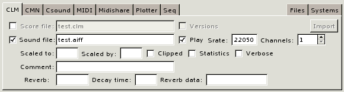
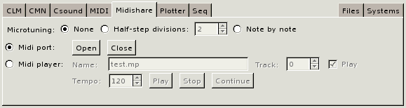
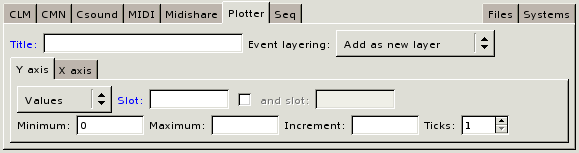

- [Topic]
- CMIO
The CMIO (Common Music Input/Output) window facilitates the generation of musical events to and from sound synthesis and display applications. The window provides a high-level interface to the system's IO capabilities and offers a structured alternative to evaluating input and output expressions in the Lisp REPL, or read-eval-print loop. CMIO windows perform their own error handling and, by default, report Lisp errors without forcing the user into the Lisp debugger. This means that novice users can experiment with algorithmic composition and sound rendering systems in a fairly forgiving environment without necessarily knowing much about Lisp evaluation beforehand.
Which sound applications (labeled targets in the window) are active at any given time depends both on what programs are installed on the host computer and what software systems have been loaded into Lisp. These sound system do not need to be loaded ahead of musical experimentation; the window's Systems and Files pages permit external software such as CLM, CMN and Midishare to be dynamically configured and loaded at any appropriate point in the working process.
To render musical events to a sound application, the user first selects the target's application page, then enters an event expression in the Events buffer and clicks the Compose button (Example 1). Each target application page has numerous fields for customizing its IO behavior. These fields can be initialized to the user's personal preference by passing appropriate arguments to the cmio function when the window is created and then set to different values as part of the ongoing process of experimentation.
The CMIO graphical user interface is implemented in GTK and currently runs on Linux and OS X. Please consult the documentation on configuring GTK for further information.
Window Layout
The CMIO interface consists of four GUI components arranged from top to bottom in the window:
- A Sources notebook holds tabbed pages that relate to creating and generating event data.
- A Targets notebook holds tab pages related to sound synthesis and display applications.
- An Executive frame manages the system's current working directory and (possibly) a current target file.
- A Status line displays color coded information about ongoing actions in the window.
Each tabbed page contains a set of fields representing the input/output features of a given application or task. The right-justified pages (such as Help or Systems) control more general features of the window or in the surrounding Lisp environment.
Example 1. The four components of a CMIO window: Sources, Targets, Executive and the Status line. Event IO is the currently active source page and Midi is the currently selected target.
![[cmio1.png]](cmio1.png)
Color highlighting provides visual clues as to how information on a page is interpreted by the interface:
- Blue labels mark required fields that must contain information before a page can execute.
- Yellow backgrounds indicate fields that will be evaluated by Lisp when the information is accessed.
- White backgrounds indicate fields that either contain uninterpreted text or are read to produce a Lisp value. It is possible to force evaluation in a white field using the #.expr notation, where expr is a Lisp expression that, when accessed by the interface, will be evaluated to produce the contents of the field.
- The Status line uses colors to classify the type of message displayed: green represents a normal information, yellow indicates a warning or notification, red signifies an error condition.
Notebooks and Pages
Each application, or task, is represented by a tabbed notebook page inside the window. The pages of the Sources notebook relate to the creation of source material in CM: generating musical event data and defining aggregate structure with seq containers. The Targets notebook pages define various "destinations" that musical data can be rendered to or imported from. The following sections briefly describe the layout and functionality of each Notebook's pages.
Sources Notebook
Containers
The Containers page is used to create, rename and delete seq containers.
![[cmio2.png]](cmio2.png)
- The Containers menu contains all of the existing named seq objects. Selecting a seq from the menu places it in the name buffer for editing.
- The Name buffer can be set to the name of a sequence to edit or create.
- The New button creates a sequence using the name specified in the name buffer.
- The Rename button renames the currently selected seq in the Containers menu to the name in the edit buffer.
- The Delete button deletes the seq listed in the name buffer as well as all of its subobjects.
- The Update button refills the Containers menu with any new seq objects created outside the window, for example in the Lisp REPL or another CMIO window.
Event IO
The Event IO page is used to generate musical events to and from the currently selected target page. Using the Event IO page in conjunction with the current target page is equivalent to calling the events function in the REPL.
![[cmio3.png]](cmio3.png)
- The Events buffer must be set to a valid Lisp expression that, when evaluated, produces musical events to schedule in the currently selected target page. This buffer is equivalent to the first argument to the events function.
- The Starts buffer contains a number or list of numbers specifying the start time offset of the events in the target score. This buffer is equivalent to the optional third argument to the events function. If no start time offset if provided it defaults to zero. It is sometimes useful to specify a negative offset. For example, to render a selection that starts at time 10 in a plotter window at time 0 in the score, specify a -10 offset in the Starts buffer.
- The Compose button renders the musical events to the currently selected target page.
Help
The Help page is not yet implemented.
Targets Notebook
While each target page has its own unique set of fields, most targets allow one or more file names to be specified in an associated buffer. File names may include directory components and the contents is always merged against the current working directory (visible in the Executive frame) to produce a fully specified pathname. In addition, most files have an associated Versions check box that, if active (checked), automatically appends a new number to the file's name each time the Compose button is pressed so that previous versions of the file will not be overwritten.
CLM
The CLM page manages input and output to CLM score files and CLM audio files.

- If Score File is checked then output will include creating the .clm score file named in the associated buffer.
- If Versions is checked then each time the file is generated a new version number will be appended to the output file name so that previous versions of the file will not be not overwritten.
- The Import button will import a .clm score from the Executive's File buffer into the Events buffer on the Event IO page.
- If Sound file is checked then output will include writing the audio file (.snd, .aiff or .wav) named in the associated buffer.
- If Play is checked then the audio file will be played automatically after it is written. See the Files page for more information.
The remaining fields on the page are specific to CLM audio files, see the CLM documentation on with-sound for more information.
CMN
The CMN page manages output to CMN score files and EPS files.
![[cmio6.png]](cmio6.png)
- The Output file buffer holds the name of the .cmn or .eps file to output.
- If Versions is checked then each time the file is generated a new version number will be appended to the output file name so that previous versions of the file will not be not overwritten.
- If View is checked then the .eps file will be viewed automatically after it is written. See the Files page for more information.
- If One paged file is checked then CMN will create one eps file to hold the entire manuscript otherwise it will generate one eps file per page of the manuscript.
- The remaining fields on the page are CMN score options, consult the documentation on CMN streams for more information.
Csound
The Csound page manages input and output to CSound score files and audio files.
![[cmio7.png]](cmio7.png)
- The Score file buffer holds the name of the .sco file to output.
- If Versions is checked then each time the file is generated a new version number will be appended to the output file name so that previous versions of the file will not be not overwritten.
- The Import button will import the .sco score named in the Executive's File buffer and the imported seq will automatically be placed in the Events buffer on the Event IO page.
- If Header is supplied then it will be written as the header of the output .sco file. To include a long header, set a Lisp variable var to the header string and specify #.var as the value of the buffer.
- If Orchestra is checked the the buffer should contain the name of the .orc file to use and Sound output is enabled. See the Files page for information about configuring the Csound command and audio playback.
MIDI
The MIDI page manages input and output to MIDI files.
![[cmio8.png]](cmio8.png)
- If Microtuning is enabled then floating point key numbers in event data will be interpreted as microtonal adjustments on MIDI keynum values. See the documentation on channel tuning for more information.
- The MIDI file buffer holds the name of the .mid file to output.
- If Versions is checked then each time the file is generated a new version number will be appended to the output file name so that previous versions of the file will not be not overwritten.
- If Play is checked then the .mid file will be played automatically after it is written. See the Files page for more information.
- The Import button will import the .mid file listed in the Executive's file buffer according to the values of the Importing fields. The imported material will be placed in the Events buffer on the Event IO page. See the documentation on import-events for information about the importing fields.
Midishare
The Midishare page supports direct connections to a Midishare Port or to a Midishare player (sequencer) application.

- If Midi Port is selected then musical events are sent directly to the open Midishare port. CMIO will automatically open the port if it is closed when events are sent.
- If Midi Player is selected then musical events will be sent to a Midishare player (sequencer). Name is the name of a new or existing player. Track is the sequencer track to place the events in. If Play is active then the player will automatically start playing once the events are written.
- The playback controls can be used to start, stop, and control the playback speed of an existing player that contains events.
Plotter
The Plotter page allows musical events to be generated to Plotter windows where they can be displayed, edited using GUI tools and mixed to other target applications.

- Title holds the name of a new or existing Plotter window.
- Event layering determines how the events are added to the window. See the documentation on the :event-layering argument to the plotter function for more information.
- The Y axis and X axis tabs allow the vertical and horizontal dimensions of the Plotter window to be customized. See the documentation on axis for more information.
To generate sound events from an existing Plotter window to a target application, call the plotter-data function in the Events buffer on the Event IO source page.
Seq
The Seq page allows musical events to be generated to seq containers. The seq object can then be displayed, mixed to other target applications and saved in files to be loaded at a later time.
![[cmio11.png]](cmio11.png)
- The Name buffer holds the name of an existing seq to generate events to. Seq objects can be created on the Containers page or by evaluating Lisp expressions in the REPL.
- If Replace existing contents is checked then existing subobjects in the seq will be thrown out before new events are added to the object, otherwise new events will be inserted, or mixed, into the existing contents.
Files
The Files page associates file handlers with the various file types used in the system. Handers can be external programs, shell scripts, or Lisp functions. Programs and shell scripts are passed the current target file by appending it after last user-supplied argument. To define a Lisp function handler, specify the hander in a function call list along with any arguments to pass to the function. The target file is passed to the function by inserting it before the first user-supplied argument to the function.
![[cmio12.png]](cmio12.png)
- If the Wait box is unchecked then external programs and scripts will run in a forked process, otherwise they will run under the Lisp process and the REPL will be unavailable until the external program finished execution and returns.
- If Output is checked then output messages from the external program will appear in the Lisp REPL window, otherwise they will not appear.
Systems
The Systems page allows external sound systems to be loaded into Lisp. Systems that are already loaded are marked with a green dot and the associated load button is disabled. Systems that are not loaded are marked with a red dot and their load button is enabled. Systems that cannot be loaded are marked by an error icon. This condition may arise if the host environment is missing software or runtime libraries.
![[cmio13.png]](cmio13.png)
- The Update button updates the status of systems that have been loaded outside the window, i.e. from the REPL or another CMIO window.
The Executive
The Executive page manages the interface between Common Music and the host operating system.
![[cmio14.png]](cmio14.png)
- The Directory field contains the current working directory, the default location for writing and importing files. File names specified on target pages are merged against the contents of this field to provide fully specified pathnames.
- The Files buffer contains the name of the current target file. The contents of this buffer is automatically updated whenever output files are generated. The buffer is also used to Import files into Common Music.
- The Execute button performs user defined actions on the target file. Most target pages that generate output files have a check box, that if active, will automatically call the Execute button after a file is written. Execute actions are accomplished by invoking file handers on target files. Handlers can be external programs, scripts or Lisp functions and are associated with file types on the Files page.
Error Handling and Notification
A CMIO window facilitates musical tasks that would otherwise be
accomplished by evaluating expressions inside the Lisp REPL
window. Under normal conditions, lisp evaluation errors will cause the
REPL to stop execution in an error break. But the CMIO
window executes via foreign function (GTK) callbacks that do not
expect the flow of control to be interrupted. As a result, Lisp error
breaks inside CMIO will likely cause the window to freeze and —
in some cases — may even cause the Lisp session to abruptly
terminate. For this reason the CMIO window evaluates CM function calls
in such a way that error messages are reported in the message line
without triggering Lisp error breaks. If you need to enter the Lisp
break loop in order to debug a problem then set the global
variable *cm-break-on-errors* to true, but realize that
once the break loop is left the CMIO window (and possibly the whole
GTK session) may no longer work.